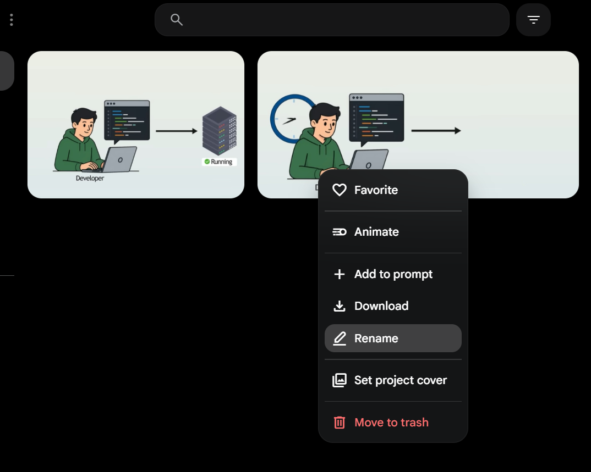
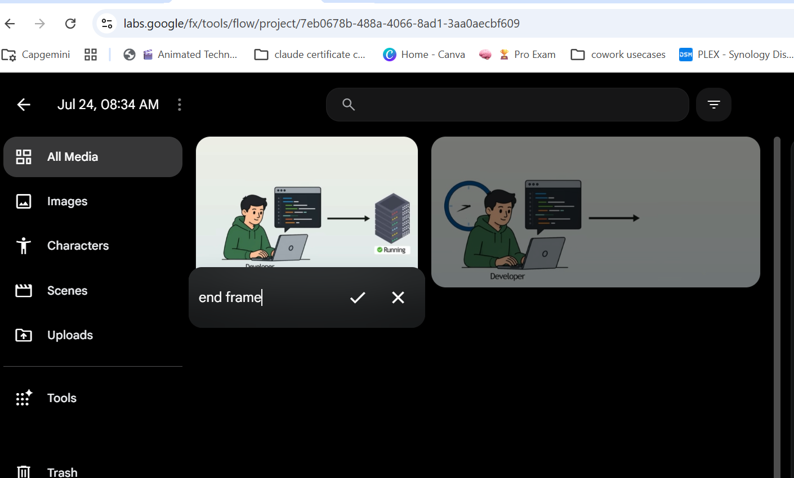

Input frame A

The opening scene used as the first visual reference for the animation.
This project uses a start frame and an end frame to generate a short animation with a developer-terminal look, colored server activity, and evolving UI text. The project was explored in Google Flow using the shared project URL: https://labs.google/fx/tools/flow/project/7eb0678b-488a-4066-8ad1-3aa0aecbf609/edit/0ea64bc9-91f9-4fd5-b384-26cc694ba4b2

The opening scene used as the first visual reference for the animation.

The ending scene used as the second visual reference for the transition.
Use the start frame and end frame to animate. Make sure the developer types and the terminal gets more text with colors. Servers are running, and the lights in the servers change over time.
The intended result is a short motion sequence that smoothly transitions between the two provided frames while emphasizing terminal text growth, server activity, and changing light states.